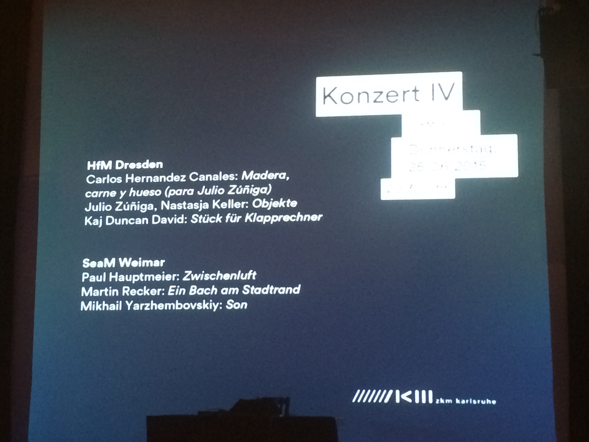

Objekte (2014):
video/installation written in collaboration with Nastasja Keller
video:
--
this work has been presented either in its original version for video projection, oil barrel, and vibration speakers or as video with a stereo speaker setup at:
Hochschule für Musik Carl Maria von Weber, Dresden, 2015
"next_generation 6.0" ZKM, Karlsruhe, 2015
"klingt gut" Symposium, HAW Hamburg, 2016
"Dekontext" Kunstverein Jena, 2017
FIMAC, Cuenca, Ecuador, 2017
"The flying field", Montagehalle, Berlin, 2017
"Agora artes", Akademie der Künste, Berlin, 2019
--
some photos from these presentations below

Nastasja looking into the oil barrel from above, "klingt gut" HAW Hamburg

someone else looking into the oil barrel, seen from a distance, "klingt gut" HAW Hamburg

screen at ZKM before the "next_generation 6.0 concert iv" began